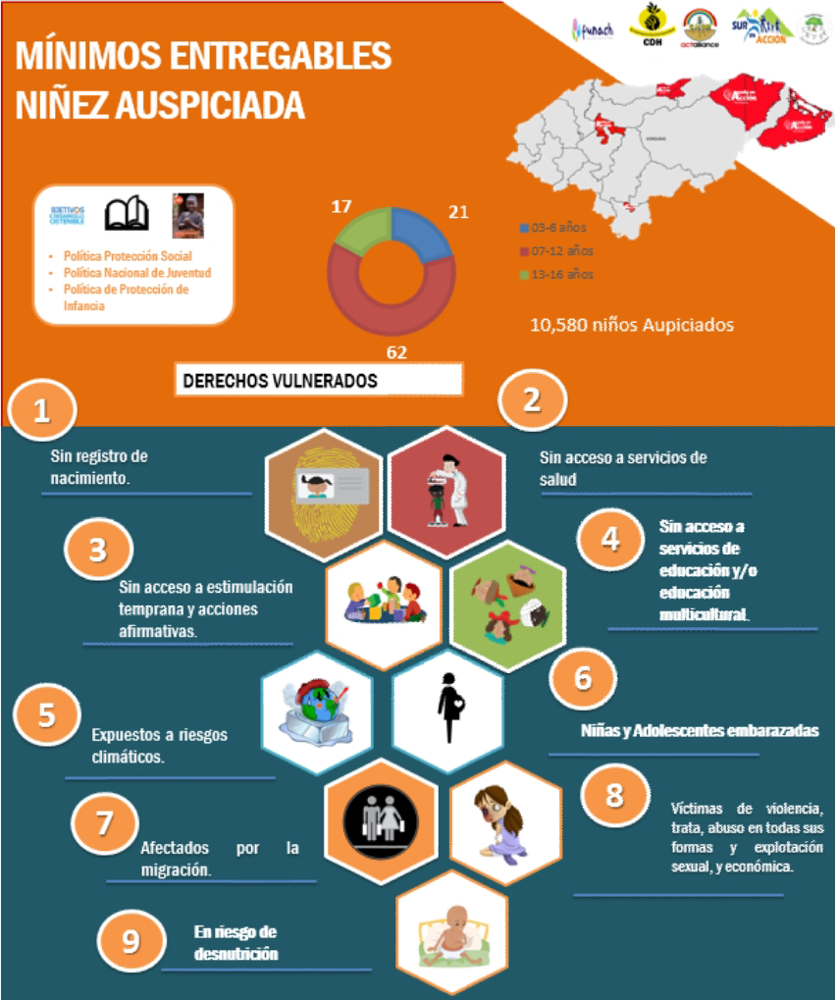

Guia N°3
Consideraciones generales
Existen múltiples mecanismos comunitarios que resultan muy útiles para promover los derechos de la población, entre los cuales Ayuda en Acción considera los Vínculos Solidarios, una plataforma comunitaria en la que confluyen el liderazgo juvenil y la experiencia de las estructuras comunitarias, que mediante un trabajo en conjunto construyen modelos de participación efectiva que posibilitan la exigibilidad y pleno goce de los derechos.
Las ferias comunitarias: nos permiten congregar o reunir en un solo lugar a la población de una comunidad, con el fin de socializar información vinculante al proyecto, visibilizar diversos materiales educativos, construcción de productos de auspiciamiento, sensibilización y brindar algunos servicios como el registro de niños y niñas para reivindicar el derecho a tener un nombre y una nacionalidad, entre otros.
Jornadas lúdicas de rendición de cuentas con la niñez:
Considerado como el proceso de rendición de cuentas que nos permite comunicar nuestros logros y dificultades en el desarrollo de la gestión, además de recoger aportes de la población participante para mejorar nuestro desempeño y actuación.
Campañas de Mínimos Entregables de la Niñez:
Cuando nos referimos a los Mínimos Entregables de la Niñez, hacemos referencia a la estrategia de promoción de derechos y protección a la niñez que el Programa Nacional implementa. Mediante este modelo de trabajo se han priorizado la promoción y complimiento de ciertos derechos que están siendo vulnerados en las comunidades en donde tenemos intervenciones.
Los mínimos entregables de la niñez, están estructurados de la siguiente manera:
La primera sección se refiere a la identificación de derechos vulnerados: Las secciones siguientes, recopilar los Mínimos Entregables de la Niñez por grupo de edad priorizado:

referente a casos de vulneración de derechos de la niñez, el nivel de satisfacción de las familias en relación a los programas implementados y por ende permitirán hacer ajustes en la planificación y replantear modelos de operación y metas establecidas.